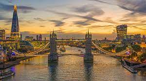
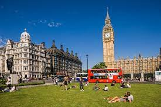
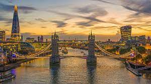
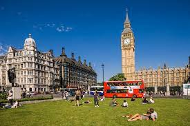

As the world leader in travel experiences since 1947, we connect you to the real London in a way like no other. London is calling and you just can’t resist the lure of this legendary capital. As one of the world’s most visited cities, a London trip is an essential part of any Europe holiday and we'll give you the inside scoop on all the best things to do in London. You’ll feel like you’re travelling through time as you dive into the royal pageantry and rich history - think Buckingham Palace, Westminster Abbey, Big Ben and the Tower of London - then leap into the future with gems like The Shard and the Tate Modern. Soak up the city’s buzzing neighbourhoods like Soho and Camden, and marvel at the cutting edge and incredibly diverse worlds of food, fashion, art, music and theatre. As you’re jumping between the famous museums, markets and monuments, be sure to spend some time basking in the gorgeous gardens and parks, or kick back with a pint by the River Thames. Travel with us and unlock the infinite possibilities thanks to our exclusive Trafalgar Highlights.